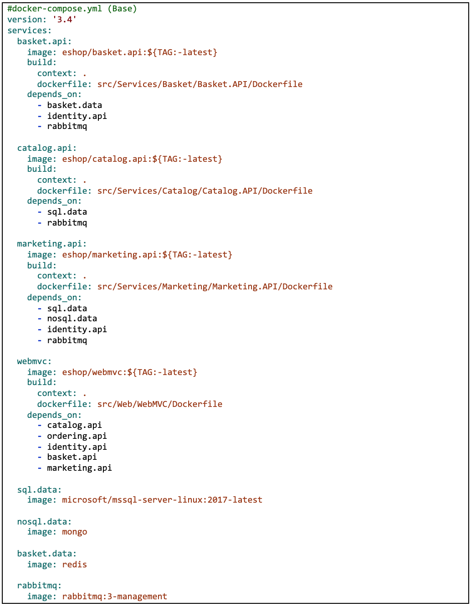
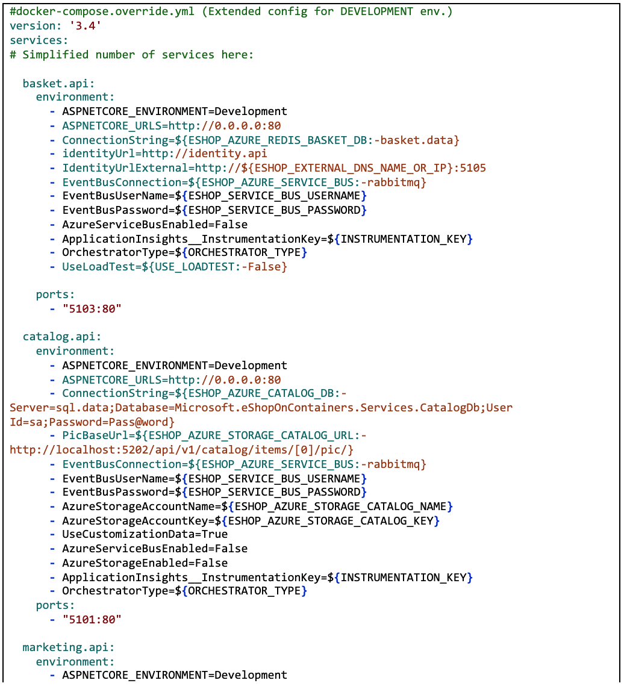
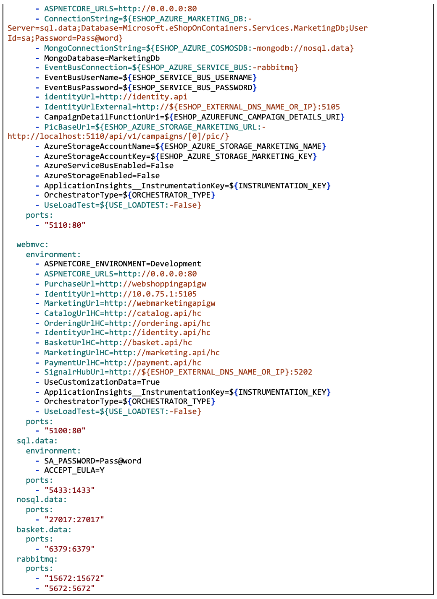
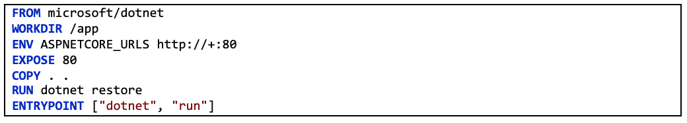
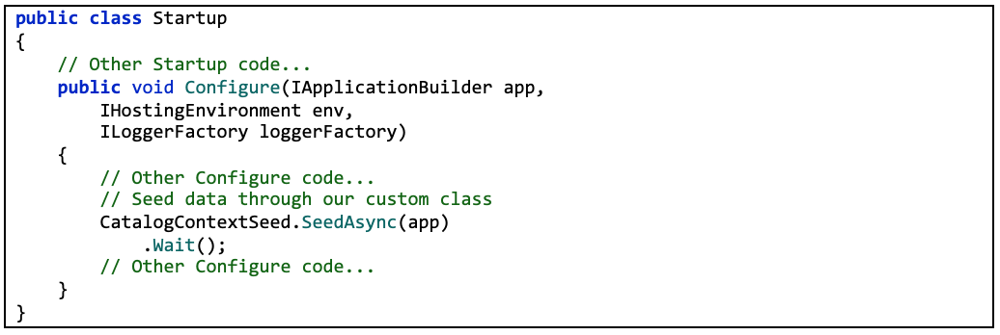

The values in the base docker-compose.yml file should not change because of different target deployment environments.
If you focus on the webmvc service definition, for instance, you can see how that information is much the same no matter what environment you might be targeting. You have the following information:
You can have additional configuration, but the important point is that in the base docker-compose.yml file, you just want to set the information that is common across environments. Then in the docker-compose.override.yml or similar files for production or staging, you should place configuration that is specific for each environment.
Usually, the docker-compose.override.yml is used for your development environment, as in the following example from eShopOnContainers:
In this example, the development override configuration exposes some ports to the host, defines environment variables with redirect URLs, and specifies connection strings for the development environment. These settings are all just for the development environment.
When you run docker-compose up (or launch it from Visual Studio), the command reads the overrides automatically as if it were merging both files.
Suppose that you want another Compose file for the production environment, with different configuration values, ports or connection strings. You can create another override file, like file named docker-compose.prod.yml with different settings and environment variables. That file might be stored in a different Git repo or managed and secured by a different team.
To use multiple override files, or an override file with a different name, you can use the -f option with the docker-compose command and specify the files. Compose merges files in the order they are specified on the command line. The following example shows how to deploy with override files.
It is convenient, especially in production environments, to be able to get configuration information from environment variables, as we have shown in previous examples. You can reference an environment variable in your docker-compose files using the syntax ${MY_VAR}. The following line from a docker-compose.prod.yml file shows how to reference the value of an environment variable.
Environment variables are created and initialized in different ways, depending on your host environment (Linux, Windows, Cloud cluster, etc.). However, a convenient approach is to use an .env file. The docker-compose files support declaring default environment variables in the .env file. These values for the environment variables are the default values. But they can be overridden by the values you might have defined in each of your environments (host OS or environment variables from your cluster). You place this .env file in the folder where the docker-compose command is executed from.
The following example shows an .env file like the .env file for the eShopOnContainers application.
Docker-compose expects each line in an .env file to be in the format <variable>=<value>.
Note that the values set in the runtime environment always override the values defined inside the .env file. In a similar way, values passed via command-line command arguments also override the default values set in the .env file.
If you are exploring Docker and .NET Core on sources on the Internet, you will find Dockerfiles that demonstrate the simplicity of building a Docker image by copying your source into a container. These examples suggest that by using a simple configuration, you can have a Docker image with the environment packaged with your application. The following example shows a simple Dockerfile in this vein.
A Dockerfile like this will work. However, you can substantially optimize your images, especially your production images.
In the container and microservices model, you are constantly starting containers. The typical way of using containers does not restart a sleeping container, because the container is disposable. Orchestrators (like Kubernetes and Azure Service Fabric) simply create new instances of images. What this means is that you would need to optimize by precompiling the application when it is built so the instantiation process will be faster. When the container is started, it should be ready to run. You should not restore and compile at run time, using dotnet restore and dotnet build commands from the dotnet CLI that, as you see in many blog posts about .NET Core and Docker.
The .NET team has been doing important work to make .NET Core and ASP.NET Core a container-optimized framework. Not only is .NET Core a lightweight framework with a small memory footprint; the team has focused on optimized Docker images for three main scenarios and published them in the Docker Hub registry at microsoft/dotnet, beginning with version 2.1:
To achieve this, the .NET team is providing three basic variants in microsoft/dotnet (at Docker Hub):
Runtime images also provides automatic setting of aspnetcore_urls to port 80 and the pre-ngend cache of assemblies; to help in getting faster startup.
You can have your databases (SQL Server, PostgreSQL, MySQL, etc.) on regular standalone servers, in on-premises clusters, or in PaaS services in the cloud like Azure SQL DB. However, for development and test environments, having your databases running as containers is convenient, because you do not have any external dependency and simply running the docker-compose up command starts the whole application. Having those databases as containers is also great for integration tests, because the database is started in the container and is always populated with the same sample data, so tests can be more predictable.
In eShopOnContainers, there is a container named sql.data defined in the docker-compose.yml file that runs SQL Server for Linux with all the SQL Server databases needed for the microservices. (You could also have one SQL Server container for each database, but that would require more memory assigned to Docker.) The important point in microservices is that each microservice owns its related data, therefore its related SQL database in this case. But the databases can be anywhere.
The SQL Server container in the sample application is configured with the following YAML code in the docker-compose.yml file, which is executed when you run docker-compose up. Note that the YAML code has consolidated configuration information from the generic docker-compose.yml file and the docker-compose.override.yml file. (Usually you would separate the environment settings from the base or static information related to the SQL Server image.)
In a similar way, instead of using docker-compose, the following docker run command can run that container:
However, if you are deploying a multi-container application like eShopOnContainers, it is more convenient to use the docker-compose up command so that it deploys all the required containers for the application.
When you start this SQL Server container for the first time, the container initializes SQL Server with the password that you provide. Once SQL Server is running as a container, you can update the database by connecting through any regular SQL connection, such as from SQL Server Management Studio, Visual Studio, or C# code.
The eShopOnContainers application initializes each microservice database with sample data by seeding it with data on startup, as explained in the following section.
Having SQL Server running as a container is not just useful for a demo where you might not have access to an instance of SQL Server. As noted, it is also great for development and testing environments so that you can easily run integration tests starting from a clean SQL Server image and known data by seeding new sample data.
To add data to the database when the application starts up, you can add code like the following to the Configure method in the Startup class of the Web API project:
The following code in the custom CatalogContextSeed class populates the data.